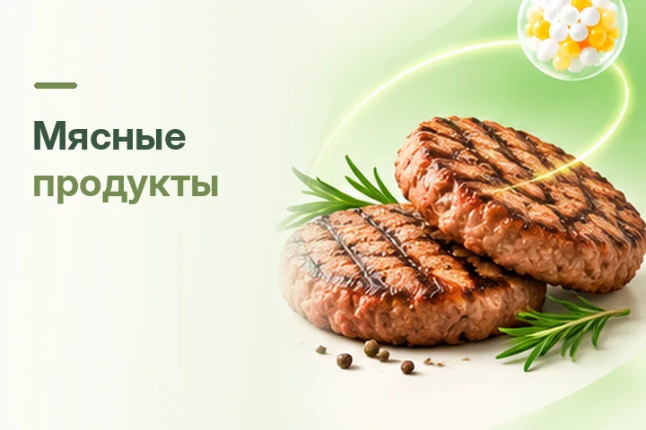

Натуральные ингредиенты из узнаваемых пищевых источников вместо синтетических консервантов — с постепенным антимикробным действием, защитой актива и нейтральным вкусом.

CleanXtend™ — технология микроинкапсуляции для консервирования, созданная под запрос потребителей на натуральные решения без потери безопасности и срока годности. Ингредиенты из узнаваемых пищевых источников позволяют заменить синтетические добавки эффективными натуральными альтернативами.
Технология обеспечивает постепенную антимикробную активность без сенсорного влияния и передозировки, защищает активы в процессе переработки и помогает сохранять оригинальный вкус и аромат продукта.
Четыре свойства, которые важны для консервирования с чистой этикеткой.
Антимикробная активность без сенсорного влияния и передозировки.
Защищает активы в процессе переработки — для эффективности и срока годности.
Без горечи и посторонних привкусов; оригинальный вкус и аромат продукта сохраняются.
Поддерживает заявления о чистой этикетке и соответствие глобальным регуляторным требованиям.
Два инкапсулированных ингредиента на натуральной основе.
Натуральный консервант для постепенной антимикробной защиты без влияния на вкус и аромат.
Ферментированный ингредиент для консервирования с чистой этикеткой и стабильности в реальных условиях производства.
Эффективность и применимость подтверждаются для конкретной рецептуры и категории продукта.
Категории с запросом на «без искусственных консервантов».



Технология микроинкапсуляции для консервирования на основе ингредиентов из узнаваемых пищевых источников.
Микроинкапсулированный экстракт рябины и микроинкапсулированная ферментированная пшеничная мука.
Сенсорная нейтральность заявлена как свойство технологии: без горечи и посторонних привкусов, с сохранением оригинального вкуса и аромата.
Для хлебобулочных изделий, соусов, готовых блюд, мясных продуктов и снеков. Пригодность зависит от рецептуры и требований регуляторов.
Пришлите состав продукта и требования к рецептуре — подберём технологию, пришлём образцы, спецификации и данные по применению.